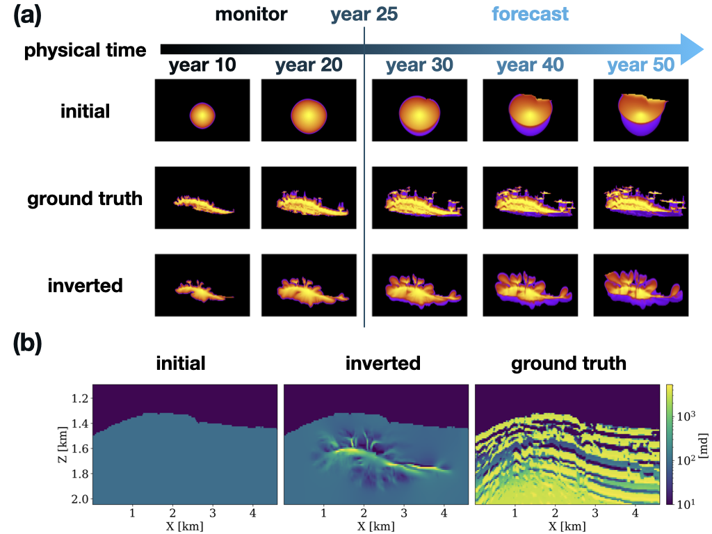

Coupled physics inversion for geological carbon storage monitoring
![]()
Objectives/Scope (600 characters)
Understanding CO2 plume behavior is key to the success of geological carbon storage projects. While two-phase flow equations provide a good model to make predictions on future CO2 plume behavior, these equations rely on having access to the true permeability model. Unfortunately, accurate information on the permeability is unavailable, which greatly jeopardizes our ability to predict CO2 plume behavior. To overcome this problem, we estimate the permeability from time-lapse seismic data via a coupled inversion methodology that improve as more monitoring data becomes available over time.
Methods, Procedures, Process (1500 characters)
To estimate the spatial permeability distribution, we adopt a coupled physics inversion framework that involves three kinds of physics, namely two-phase fluid-flow, rock, and wave physics. The fluid-flow equations model the time evolution of the CO2 concentration and pressure given the permeability distribution. The rock physics modeling converts the time-varying CO2 concentration into the acoustic wavespeed. Finally, seismic modeling generates time-lapse seismic data for each vintage based on the wavespeed of the rocks. A schematic of this multiphysics forward model is shown in Figure 1.
Given observed time-lapse seismic data, we then directly invert for the permeability through the fully nested physics modeling operators. The inverted permeability can be used to generate time-varying CO2 concentration snapshots that match observed time-lapse seismic data. Aside from obtaining estimates for the CO2 plume’s past and current behavior, constrained by the two-phase flow equations, the proposed inversion methodology is also capable of producing reliable CO2 forecasts from the inverted permeability. These forecasts can be produced for different injection scenarios allowing for in-situ interventions designed to optimize productivity and minimize risks.
Results, Observations, Conclusions (1500 characters)
We conduct a realistic numerical study based on the North Sea Compass model whose geology is very similar to sites currently being considered as a potential site for geological carbon storage. We convert the wavespeed in the model to log-permeability values to make up alternating high- and low-permeability layers in the reservoir with a seal on top. We inject CO2 in a highly permeable layer for 25 years. During and after injection, the CO2 tends to move into high permeability layers and move up due to buoyancy effects. To monitor the CO2 plume seismically, we shoot 5 surveys of crosswell data every 5th year, using a Ricker wavelet with a central frequency of 20 Hz.
We start the inversion with homogenous permeability values in the reservoir. After 10 data passes of gradient descent, the CO2 plume recovery from the inverted permeability is shown in Figure 2(a). The extent of the plume looks drastically different from the initial prediction based on the homogeneous permeability, but reasonably similar to the ground truth CO2 plumes. As expected, we only obtain information on the permeability from regions within the CO2 plume during the first 25 years of injection, shown in Figure 2(b). While the inverted permeability captures only part of the true permeability model, it improves drastically on plume forecasts for the next 25 years compared to those obtained from the starting model for the permeability. More information is in slimgroup.github.io/IMAGE2023.
Significance/Novelty (600 characters)
To our knowledge, this is the first numerical study that applies a multiphysics inversion framework to a realistic geological carbon storage site. The fluid-flow simulations and sensitivity calculations are conducted using state-of-the-art solvers in JutulDarcy.jl, which accounts for compressibility and residual trapping effects (purple colors). Also, the simulations are based on a proxy permeability model derived from real imaged seismic and well data. Experiment shows that the proposed methodology can be applied to geological carbon storage projects to estimate and forecast CO2 plume evolution.

